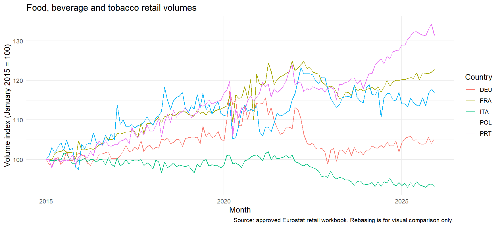
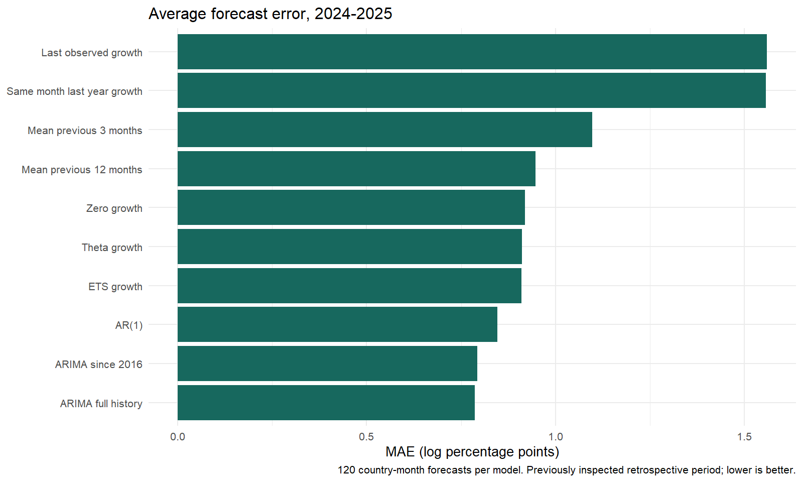
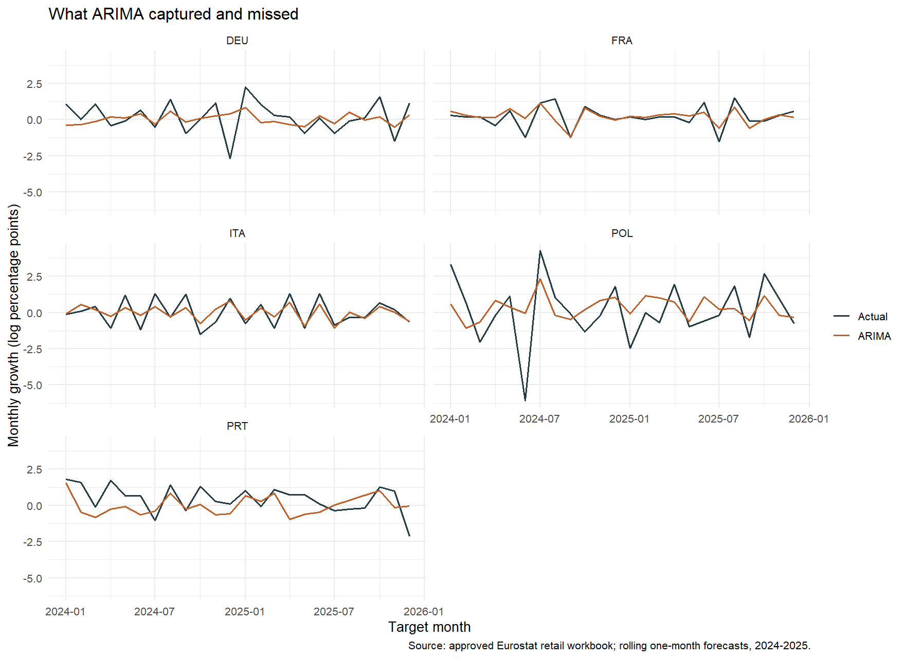
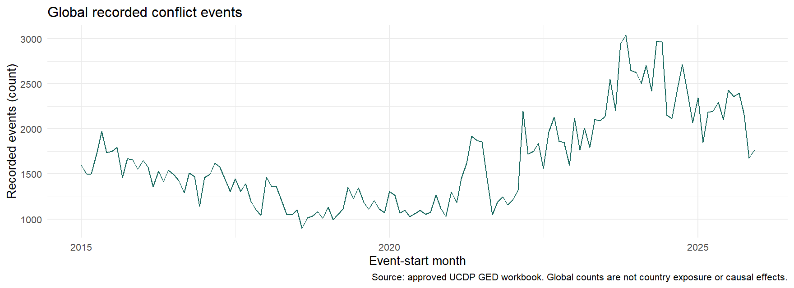

Can retail history forecast next month’s demand?
We compare one-month forecasts for food, beverage and tobacco retail-volume growth in Germany, France, Italy, Poland and Portugal. The unit is a country-month, not a store or product.
ARIMA full history: MAE 0.7864 and RMSE 1.1082. Its average absolute error is 14.5% below predicting no change over the same 120 targets.
These are retrospective results. The 2024-2025 period influenced earlier model searches. Each forecast uses only earlier observations, but that does not make the model-selection process an untouched test. The source workbook contains revised values; actual release-time availability is not established.
Data provenance: This run rebuilt its analytic tables from the original Excel and ZIP datasets in data/raw/.
1. Understand the data
Growth = 100 × log(this month’s volume / previous month’s volume). A value near 1 means approximately 1% monthly growth. Earlier source history is retained for training; the descriptive study window is 2015-2025. No external data are downloaded and missing historical macro data are not invented.

2. Compare forecasts fairly
All models predict the same months. MAE is the average size of the error; RMSE penalises large misses more heavily. Models are refitted as each month passes. This is a sequence of one-month forecasts, not a 24-month forecast made at the end of 2023.

| model | n | MAE | RMSE |
|---|---|---|---|
| ARIMA full history | 120 | 0.7864 | 1.1082 |
| ARIMA since 2016 | 120 | 0.7933 | 1.1415 |
| AR(1) | 120 | 0.8459 | 1.1424 |
| ETS growth | 120 | 0.9107 | 1.2584 |
| Theta growth | 120 | 0.9109 | 1.2674 |
| Zero growth | 120 | 0.9197 | 1.2678 |
| Mean previous 12 months | 120 | 0.9470 | 1.3164 |
| Mean previous 3 months | 120 | 1.0972 | 1.5234 |
| Same month last year growth | 120 | 1.5577 | 2.0106 |
| Last observed growth | 120 | 1.5598 | 2.1267 |
3. Inspect the misses

Country-level errors are in the country comparison. An aggregate gain does not imply the same improvement in every country or month.
4. Keep economic and conflict context
A matched supporting comparison adds lagged GDP and global conflict counts/deaths to a simple retail regression. Both versions use the same training rows. GDP is assumed available two months after quarter-end; conflict is lagged two months relative to the target. These are timing assumptions using revised data. They do not establish real-time availability or a causal effect of conflict.
| model | n | MAE | RMSE |
|---|---|---|---|
| Retail regression | 120 | 0.8370 | 1.1251 |
| Retail + GDP + global conflict | 120 | 0.8912 | 1.1797 |

Annual Gini remains annual context. COVID observations remain missing outside their observed range. Inflation, confidence and unemployment extracts have insufficient historical coverage for the full forecast experiment. The file labelled energy inflation duplicates headline inflation; workbook metadata identifies the inflation unit as monthly change, despite the filenames saying annual.
5. Reproduction and limits
| targets | max_actual_difference | max_prediction_difference |
|---|---|---|
| 120 | 0 | 0 |
ARIMA orders fitted through December 2025 show what the automatic procedure selected for each country at the endpoint; orders can differ at earlier forecast origins.
Tables round numeric values to four decimal places; the CSV files retain full precision. The reproduction check compares all 120 ARIMA predictions against the saved previous run. This workflow reads its source datasets directly from the raw-data folder. Full outputs: core forecasts, supporting forecasts, economic coverage, R environment.
Business use: a transparent country-level baseline for planning discussions. This analysis does not measure store-level inventory savings, prove causality, or establish future deployment performance. The news extension is outside the scope of this final analysis.